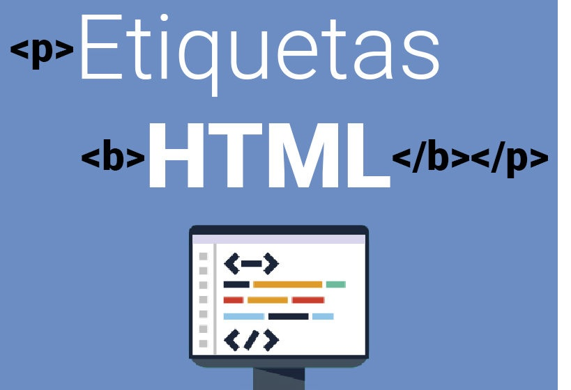

PROPOSITO DEL SITIO
Este sitio se creo con el proposito de crear aprendizaje del Tema: Etiquetas Basicas de HTML, Atributos y Valores con el fin de que los estudiantes de la univercidad puedan enter con facilidad estos temas que son imporantantes para la creación de sitios web basicos.
TEMAS A VER:
Los temas que vamos a tratar en esta página son las etiquetas básicas las cules nos ayudan a entender
mejor como se realiza una pagina web y con un correcto manejo.
El otro tema es son los atributos y valores de las etiquetas las cuales son el complemente para poder realizar una
pagina web de manera adecuada.